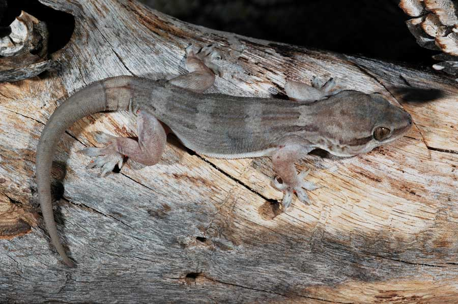
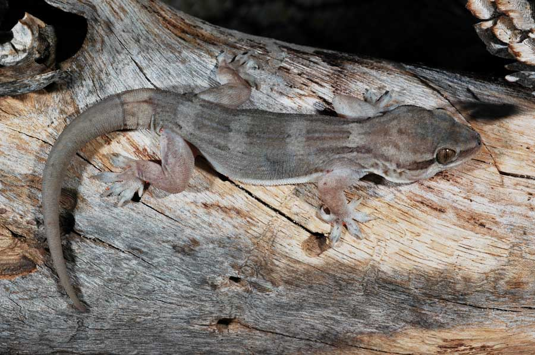

GECKOS:
Most diverse group, includes both day - and night - active species.
Often seen on rocks and houses.
Named after the Dragon's Blood Tree (Dracaena cinnabari), this gecko is a true Socotran gem.
Socotra is renowned for its remarkable diversity of endemic animal life;
The number of species in the island is at least between (130 - 140)
We are going to talk about one kind only, which is REPTILES

Socotra is a reptile paradise! This isolated Yemeni archipelago hosts around 30 species of terrestrial reptiles,
and astonishingly, about 90% of them are endemic—meaning they exist nowhere else on Earth
Down here are some examples of REPTILES: (one example for each one)
Most diverse group, includes both day - and night - active species.
Often seen on rocks and houses.
Named after the Dragon's Blood Tree (Dracaena cinnabari), this gecko is a true Socotran gem.
Chamaeleo monachus (Monarch Chameleon) , the only chameleon species on Socotra.
It can change its color and hisses when alarmed
Various endemic species, often sunbathing or hunting insects.
Vital for local ecosystems.
A robust lizard with unique scale patterns, and often found basking on rocks.
It also plays a role in insect population control.
Several endemic species, though not all are well-documented.
Local legends speak of very large snakes
Tiny, blind, dark brown or black, and burrows underground.
Around 15-30 cm long, and feeds on earthworms and small invertebrates.
His eyes are vestigial, and covered by scales.